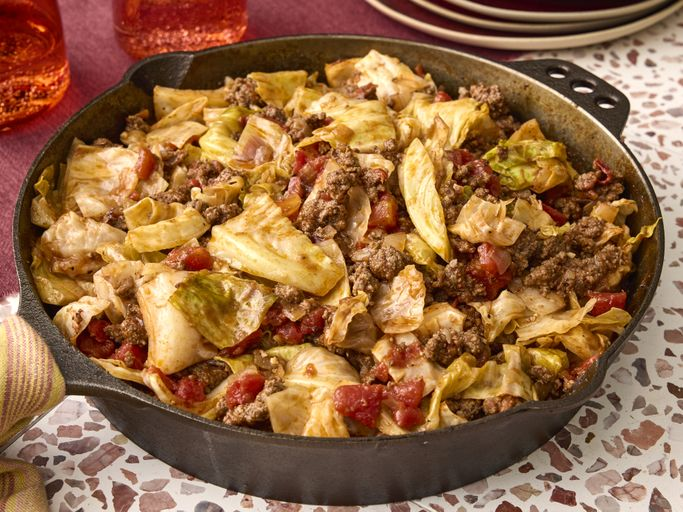

Unstuffed Cabbage Roll

Description
An unstuffed cabbage roll is basically a deconstructed version of a regular casserole. All the traditional cabbage roll ingredients (cabbage, ground beef, tomatoes, other veggies, and spices and seasonings) are cooked together — so you don't have to worry about pre-cooking and rolling the cabbage.
Ingredients
- 2 pounds ground chicken
- 2 pounds ground beef
- 1 small head cabbage, chopped
- 2 (14.5 ounce) cans diced tomatoes
- 1 (8 ounce) can tomato sauce
- ½ cup water
- 2 cloves garlic, minced
- 2 teaspoons salt
- 1 teaspoon ground black pepper
Steps
- Gather all ingredients.
- Heat a Dutch oven or large skillet over medium-high heat. Cook and stir beef and onion in the hot Dutch oven until browned and crumbly, 5 to 7 minutes; drain and discard grease.
- Add cabbage, tomatoes, tomato sauce, water, garlic, salt, and pepper and bring to a boil. Cover Dutch oven, reduce heat, and simmer until cabbage is tender, about 30 minutes.
- Serve hot and enjoy!
Back to homepage!